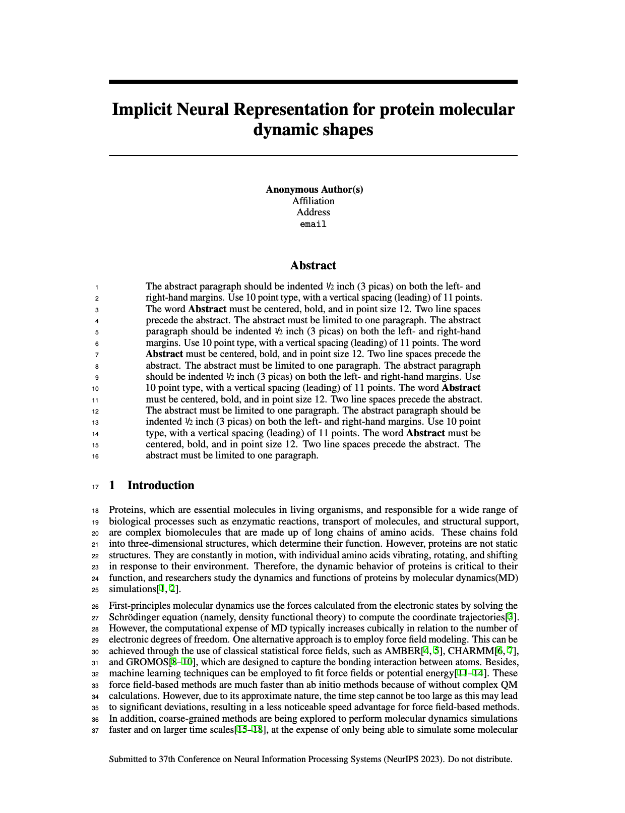

|
Overview of Our NeuralMD.
|
Protein dynamics are crucial for understanding the function and behavior of proteins in biological systems. Deep learning methods have become more popular in modeling molecular dynamics. Due to the complex atomic systems of proteins, both first-principle-based methods and current deep learning methods have limitations, with the former being computationally expensive, and the latter being difficult to scale up for larger proteins. Here we propose to model protein dynamics from a new perspective, that is, the implicit neural representation model of protein surface in 3D + time domain. We use the zero-level set of signed distance functions (SDFs) to represent protein surfaces. Our model enables temporally and spatially continuous representations of protein surfaces. The experimental results show that our model can represent the protein dynamic trajectories well, and has the ability to interpolate and extrapolate in 3D + time domain. All codes and models will be published upon acceptance, but we have an anonymous project webpage that shows some video results, https://anonymouswk.github.io/NeuralMD.
|  |
Anonymous Author(s)
Implicit Neural Representation for Protein Molecular Dynamic Shapes Under review To be published |